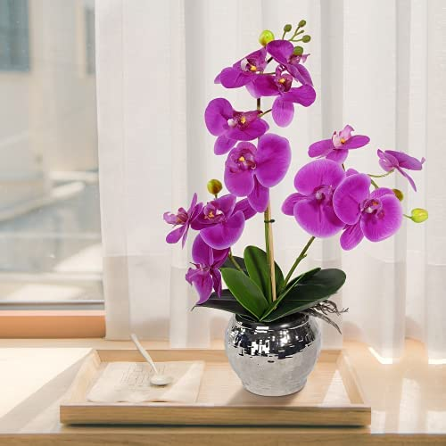

A elegância natural das orquídeas
A orquídea é originária do continente americano, no entanto, foi levada para a Europa no século XVIII por barcos da Marinha britânica. No entanto, a verdade é que essa flor já era conhecida muito antes de imaginarmos.
Havia muitas civilizações antigas que viam nesta planta não apenas um forte poder estético, mas também propriedades afrodisíacas. No entanto, quando atravessou o mundo, a orquídea começou a ser apreciada de maneira mais generalizada.
As classes burguesas enlouqueceram com esta planta exótica. Logo começaram as explorações em quase todas as florestas. Hoje em dia é bem mais prático encontrar as orquídeas, pois em qualquer cidade nos quatro continentes, existem estufas especializadas nestas flores.
Cuidados com as orquídeas
O que devemos saber sobre as orquídeas em relação aos seus cuidados? Para começar, elas não são tão delicadas quanto você pensa, mas requerem tratamento especial em alguns casos.
Vamos lembrar que estamos falando sobre plantas tropicais, portanto, a umidade será importante no seu dia a dia. Tente achar um canto onde essa umidade seja um pouco mais alta. Tenha a certeza de que sua orquídea ficará bem melhor ali.
Quanto à luz, é importante que ela receba sua dose diária. No entanto, não se deve colocar os vasos em lugares onde o sol é direto. Será melhor optar por cômodos bem iluminados, mas em que o sol não entre de forma muito agressiva. Isso pode matar sua orquídea em pouco tempo.
E como faço para regar? Com cuidado! O excesso de água pode ser mortal. Tente regar as orquídeas apenas uma vez por semana. O ideal é refrescar suas raízes colocando-as em um prato com água e, depois de um tempo, removê-las. Isso será mais do que suficiente para que sua flor. cresça saudável.
Iluminação e rega pode alterar de espécie para espécie, o que não muda é o tipo de solo que a semente da orquídea precisa. Esta deve ser porosa e solta para crescer bem. Portanto, recomenda-se o uso de musgo, crosta triturada, entre outras misturas respiráveis.
Quando a orquídea já tiver florescido, mude-a de vaso e aproveite este processo para dividir suas raízes sem danificá-las, certificando-se de remover aquelas que estão mortas ou podres.
Cores diferentes das orquídeas
Quantas cores podemos encontrar nas espécies de orquídeas? A verdade é que são muitas. Lembre-se que esta é uma planta que tem mais de 50.000 espécies diferentes.
Embora as originais sejam mais limitadas, é fato que quando a orquídea começou a ser uma flor em extinção por tanta procura, muitos foram os horticultores que começaram a fazer experimentos com a planta. Assim, eles conseguiram criar novas variedades cruzando orquídeas de diferentes espécies e, portanto, dando uma ampla gama de cores que podem ser muito úteis em termos de decoração residencial.
E, embora a orquídea branca clássica seja elegante e tenha uma ótima aparência, a opção pelas flores coloridas pode dar muita alegria aos cômodos de sua residência.